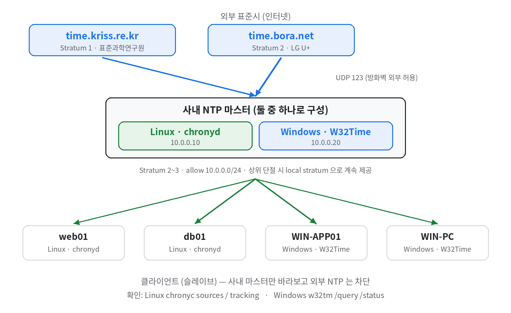
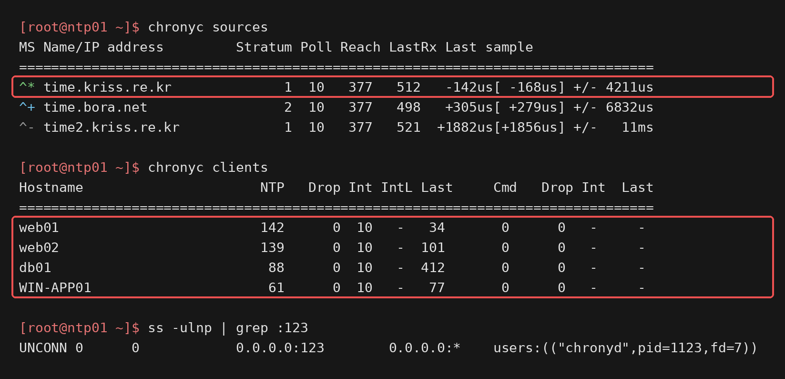
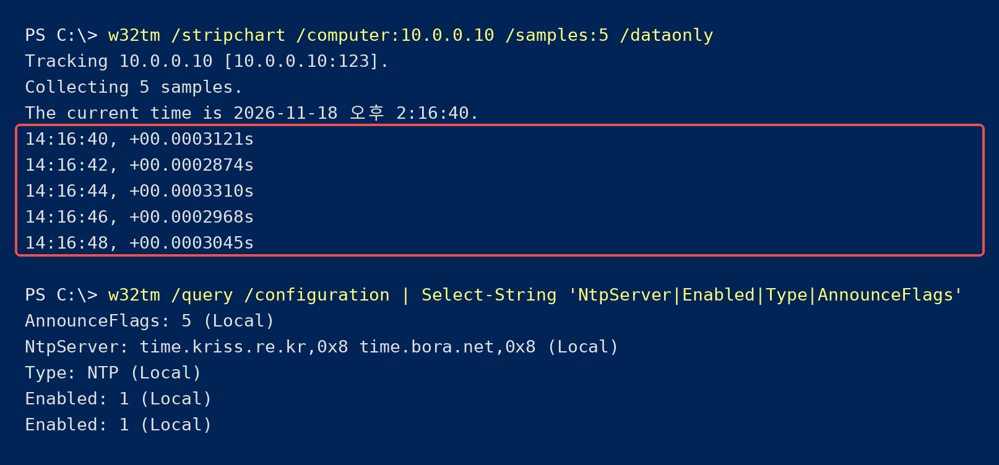
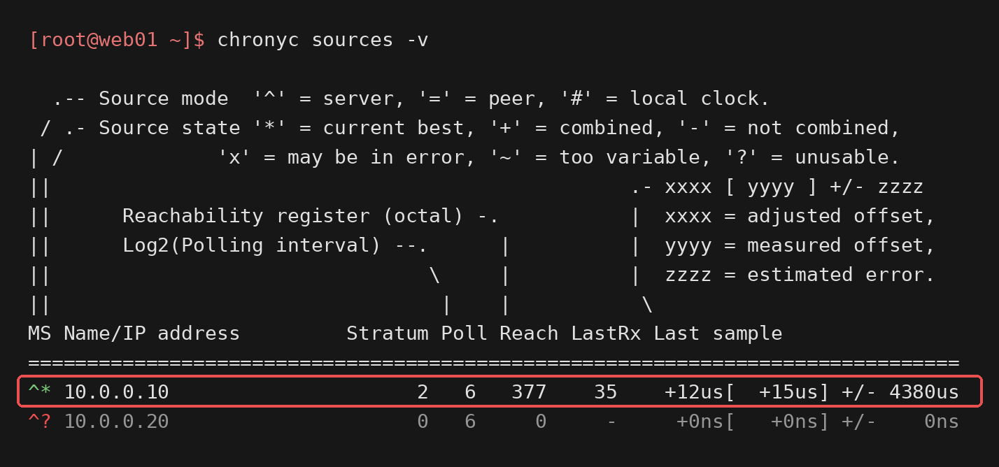
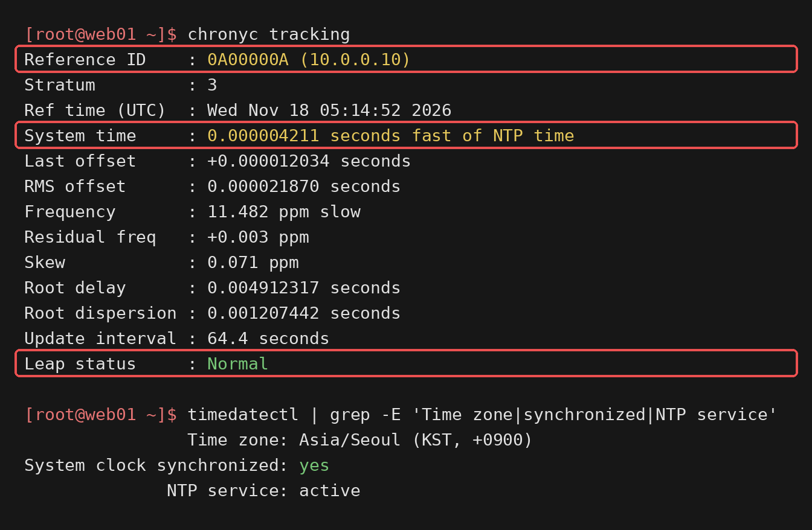
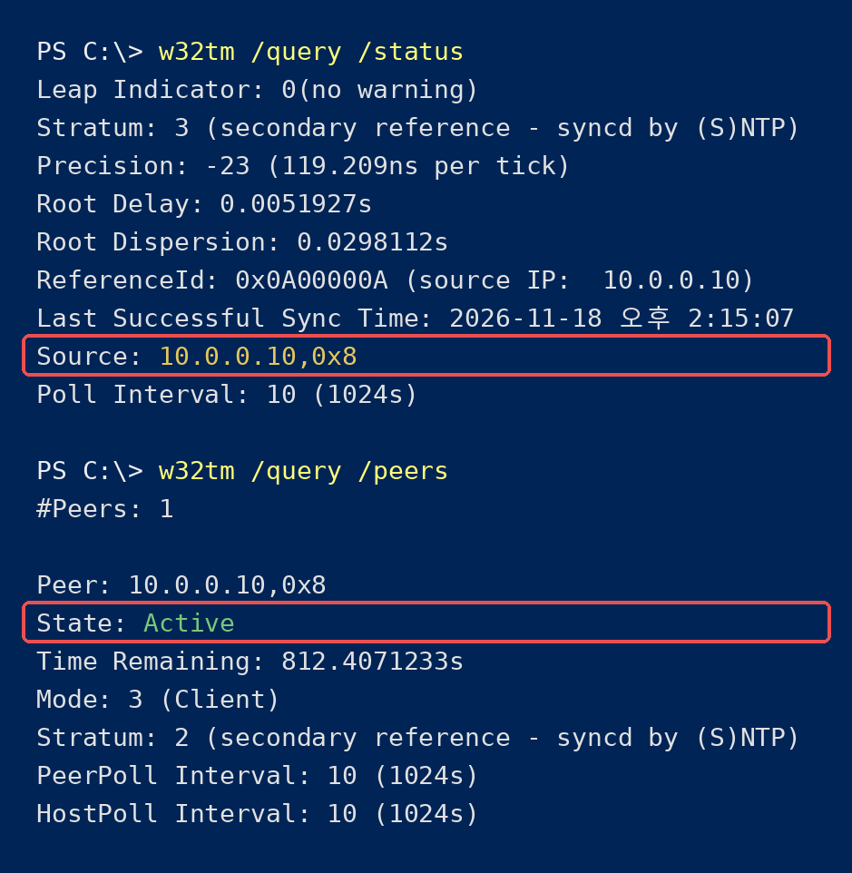
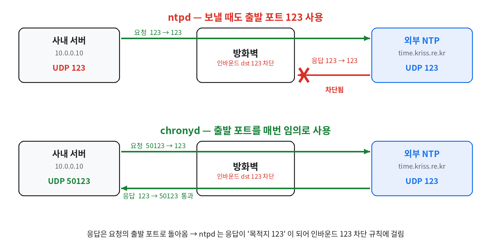
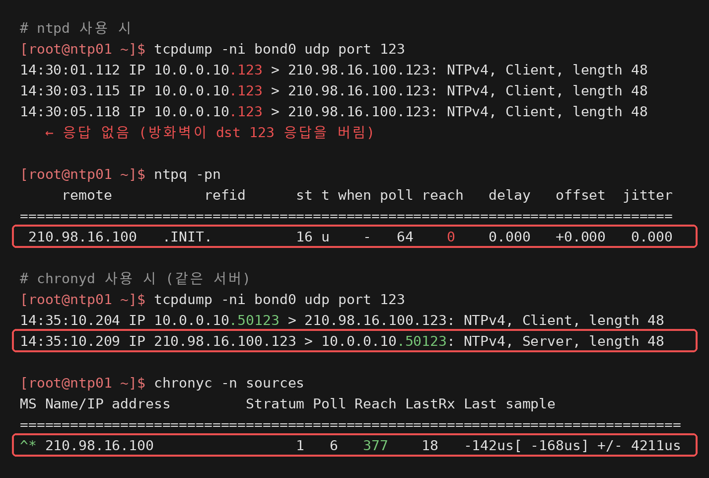

OS & 시스템 관리
사내 NTP 시간 서버 구성 — chrony · W32Time
서버마다 외부 NTP를 직접 바라보면 방화벽 예외가 늘고, 서버 간 시간이 조금씩 어긋납니다. 사내에 NTP 마스터를 한 대 두고 모든 서버가 이 마스터를 따르게 했습니다. 마스터를 Linux(chronyd)로 할 때와 Windows(W32Time)로 할 때를 모두 정리하고, 클라이언트에서 동기화 상태를 읽는 방법을 필드별로 설명합니다.
1. 구성

| 상위 시간원 | time.kriss.re.kr(한국표준과학연구원), time.bora.net |
|---|---|
| 마스터 (택 1) | Linux chronyd 10.0.0.10 / Windows W32Time 10.0.0.20 |
| 클라이언트 | Linux(chronyd), Windows(W32Time) — 사내 마스터만 바라봄 |
| 포트 | UDP 123 (마스터만 외부로 허용, 클라이언트는 마스터로만 허용) |
Stratum(계층)
원자시계·GPS 같은 기준 장비에 직접 연결된 서버가 Stratum 1이고, 거기서 받아가면 한 단계씩 숫자가 커집니다. 사내 마스터가 Stratum 1에서 받으면 Stratum 2, 클라이언트는 Stratum 3이 됩니다. 숫자가 작을수록 기준에 가깝다는 뜻이며, 16은 "동기화 안 됨"입니다.
2. 마스터 A: Linux chronyd
# 설치·시간대 (Rocky 9 은 기본 설치되어 있음)
dnf install -y chrony
timedatectl set-timezone Asia/Seoul# /etc/chrony.conf (마스터 10.0.0.10)
# 기본 pool 줄은 주석 처리하고 상위 서버 지정
#pool 2.rocky.pool.ntp.org iburst
server time.kriss.re.kr iburst
server time2.kriss.re.kr iburst
server time.bora.net iburst
driftfile /var/lib/chrony/drift
makestep 1.0 3 # 시작 직후 3번까지는 1초 넘게 틀리면 한 번에 맞춤
rtcsync # 하드웨어 시계(RTC)도 11분마다 맞춤
# 사내 대역에 시간 제공 (이 줄이 있어야 서버로 동작)
allow 10.0.0.0/24
# 외부와 끊겨도 계속 시간 제공 (상위보다 큰 값으로)
local stratum 10
logdir /var/log/chrony
log measurements statistics trackingsystemctl enable --now chronyd
systemctl restart chronyd
# 방화벽: 사내 대역에서 오는 NTP 허용
firewall-cmd --permanent --add-rich-rule='rule family=ipv4 source address=10.0.0.0/24 service name=ntp accept'
firewall-cmd --reload
# 확인
chronyc sources # 상위 서버와 동기화 상태
chronyc clients # 이 마스터를 쓰는 클라이언트 목록 (root 필요)
ss -ulnp | grep :123 # UDP 123 대기 확인
^*), 클라이언트 4대가 접속 중 (예시 화면)server 줄을 모두 지우고 local stratum 8만 둡니다. 절대 시간은 정확하지 않을 수 있지만, 사내 서버끼리 시간은 정확히 맞습니다. 로그 대조나 인증(Kerberos 등)에는 이것이 더 중요합니다.3. 마스터 B: Windows W32Time
Windows Server의 기본 시간 서비스(W32Time)도 NTP 서버로 쓸 수 있습니다. 관리자 PowerShell에서 실행합니다.
# 1) 상위 서버 지정 (0x8 = 클라이언트 모드로 요청)
w32tm /config /manualpeerlist:"time.kriss.re.kr,0x8 time.bora.net,0x8" `
/syncfromflags:manual /reliable:yes /update
# 2) NTP 서버 기능 켜기
Set-ItemProperty -Path "HKLM:\SYSTEM\CurrentControlSet\Services\W32Time\TimeProviders\NtpServer" `
-Name Enabled -Value 1
# 3) 서비스 자동 시작 + 재시작
Set-Service w32time -StartupType Automatic
Restart-Service w32time
# 4) 방화벽: 사내 대역에서 UDP 123 허용
New-NetFirewallRule -DisplayName "NTP Server (UDP 123)" -Direction Inbound `
-Protocol UDP -LocalPort 123 -RemoteAddress 10.0.0.0/24 -Action Allow
# 5) 즉시 동기화 및 확인
w32tm /resync /rediscover
w32tm /query /status
w32tm /query /configuration| 설정 | 의미 |
|---|---|
,0x8 | 상위 서버에 일반 클라이언트 모드로 요청 (대부분의 공용 NTP와 호환) |
,0x1 | Windows 자체 주기 대신 SpecialPollInterval(초) 간격으로 요청. 0x9 = 0x1 + 0x8 |
/syncfromflags:manual | 도메인 계층이 아니라 지정한 목록에서 받음 |
/reliable:yes | "신뢰할 수 있는 시간원"으로 자신을 알림 (AnnounceFlags = 5) |

- AD 도메인 환경: 도메인 PC와 서버는 자동으로 DC에서 시간을 받습니다. 이 경우 위 설정은 PDC 에뮬레이터 역할의 DC 한 대에만 합니다. 일반 서버를 마스터로 따로 두면 도메인 계층과 충돌합니다.
- 가상 머신: 하이퍼바이저의 시간 동기화(Hyper-V 통합 서비스, VMware Tools)가 켜져 있으면 W32Time과 서로 시간을 덮어씁니다. 마스터 VM에서는 하이퍼바이저 시간 동기화를 끕니다.
# Hyper-V 게스트: 하이퍼바이저 시간 제공자 끄기 Set-ItemProperty -Path "HKLM:\SYSTEM\CurrentControlSet\Services\W32Time\TimeProviders\VMICTimeProvider" ` -Name Enabled -Value 0 Restart-Service w32time - 정밀도는 chrony보다 낮습니다(보통 수 ms~수십 ms). 금융·로그 정밀 대조처럼 ms 이하가 필요하면 Linux chrony 마스터를 권장합니다.
4. 클라이언트(슬레이브) 설정
Linux (chronyd)
# /etc/chrony.conf — pool/server 줄을 모두 지우고 사내 마스터만 지정
server 10.0.0.10 iburst # Linux 마스터
#server 10.0.0.20 iburst # Windows 마스터를 쓸 경우
driftfile /var/lib/chrony/drift
makestep 1.0 3
rtcsyncsystemctl restart chronyd
chronyc makestep # 차이가 크면 즉시 한 번에 맞춤
chronyc sources -v
chronyc trackingWindows (W32Time)
# 도메인에 가입하지 않은 서버·PC
w32tm /config /manualpeerlist:"10.0.0.10,0x8" /syncfromflags:manual /update
Set-Service w32time -StartupType Automatic
Restart-Service w32time
w32tm /resync /rediscover
w32tm /query /status
w32tm /query /peers도메인에 가입된 PC는 설정하지 않아도 DC에서 받습니다. w32tm /query /source가 DC 이름이면 정상입니다.
5. Linux 클라이언트: chronyc sources 필드 의미

-v를 붙이면 맨 위에 필드 설명이 함께 나옵니다. 10.0.0.10에 동기화(^*), 10.0.0.20은 응답 없음(^?) (예시 화면)| 필드 | 의미 | 예시 값 읽는 법 |
|---|---|---|
| M (첫 글자) | 시간원 종류^ 서버 · = 피어(서로 맞춤) · # 로컬 기준 장비(GPS 등) | ^ = server 줄로 지정한 NTP 서버 |
| S (둘째 글자) | 상태* 현재 동기화 중인 최적 서버+ 함께 계산에 쓰는 정상 서버- 정상이지만 계산에서 제외? 연결 안 됨·아직 판단 전x 다른 서버들과 시간이 크게 달라 틀린 것으로 판단~ 응답 지연 변동이 너무 큼 | *가 한 줄이라도 있어야 정상. 모두 ?면 방화벽·주소 문제 |
| Name/IP address | 시간원 이름 또는 IP | chronyc -n sources는 이름 조회 없이 IP로 표시 |
| Stratum | 그 서버의 계층. 내 계층 = 이 값 + 1 | 2 → 이 클라이언트는 3. 0은 아직 응답을 못 받음 |
| Poll | 요청 간격을 2의 거듭제곱(초)으로 표시 | 6 = 2⁶ = 64초, 10 = 1024초. 안정되면 점점 늘어남 |
| Reach | 최근 8번 요청의 성공 여부를 8진수로 표시 (비트 하나 = 1회) | 377 = 이진수 11111111 = 8번 모두 성공. 0 = 전부 실패. 376, 177처럼 중간에 빠지면 간헐적 유실 |
| LastRx | 마지막으로 응답을 받은 뒤 지난 시간 (s·m·h·d) | 35 = 35초 전. Poll 간격보다 훨씬 크면 응답이 끊긴 것 |
| Last sample | 보정값[측정값] +/- 오차• 앞 숫자: 그 뒤 시계 보정을 반영한 차이 • [ ] 안: 실제로 측정한 차이 • +/- : 추정 오차 범위 | +12us[+15us] +/- 4380us → 서버보다 약 12µs 빠르고 오차는 ±4.4ms 이내. +는 내 시계가 빠름, -는 느림 |
함께 보면 좋은 chronyc sourcestats
| 필드 | 의미 |
|---|---|
| NP / NR | 계산에 쓰는 샘플 수 / 그중 추세선 위아래가 바뀐 횟수 (NR이 NP에 비해 너무 적으면 추세가 한쪽으로 쏠림) |
| Span | 가장 오래된 샘플과 최신 샘플 사이 시간 |
| Frequency / Freq Skew | 그 서버 기준 내 시계가 빠르거나 느린 정도(ppm) / 그 추정의 오차 |
| Offset / Std Dev | 추정 시간 차 / 샘플 흩어짐 정도 (작을수록 안정) |
6. Linux 클라이언트: chronyc tracking 필드 의미

| 필드 | 의미 |
|---|---|
| Reference ID | 현재 동기화 중인 서버 (16진수 + IP). 7F7F0101은 local stratum으로 자기 자신, 00000000은 동기화 안 됨 |
| Stratum | 이 서버의 계층 |
| Ref time (UTC) | 마지막으로 기준 시간을 받은 시각 |
| System time | 지금 내 시계와 NTP 시간의 차이. chrony는 시계를 한 번에 바꾸지 않고 조금씩 빠르게·느리게 돌려 맞추므로, 이 값이 줄어드는 중이면 정상 |
| Last offset / RMS offset | 마지막 보정 때의 차이 / 장기 평균 차이 |
| Frequency | 보정하지 않으면 내 시계가 빠르거나 느린 정도. 11.482 ppm slow = 하루 약 1초 느림 |
| Residual freq / Skew | 남아 있는 주파수 오차 / 주파수 추정의 오차 범위 |
| Root delay / Root dispersion | Stratum 1까지 왕복 지연 합계 / 누적 오차. 대략 "최대 오차 ≈ delay/2 + dispersion" |
| Update interval | 최근 시계 갱신 간격 (초) |
| Leap status | Normal 정상 · Insert/Delete second 윤초 예정 · Not synchronised 동기화 안 됨 |
7. Windows 클라이언트: w32tm 필드 의미

Source가 사내 마스터이고 State: Active면 정상 (예시 화면). 한글 Windows는 항목 이름이 한글로 나옵니다.w32tm /query /status
| 필드 | 의미 |
|---|---|
| Leap Indicator | 0(no warning) 정상 · 3(not synchronized) 동기화 안 됨 |
| Stratum | 이 PC의 계층. 0 (unspecified)이면 아직 동기화 전 |
| Precision | 시계 정밀도 (2의 거듭제곱 초). -23 = 2⁻²³초 ≈ 119ns |
| Root Delay / Root Dispersion | chrony와 같음: 최상위까지 지연 합계 / 누적 오차. Dispersion이 수 초(예: 10.0s)로 크면 오래 동기화 못 한 상태 |
| ReferenceId | 현재 시간원 (16진수 + IP) |
| Last Successful Sync Time | 마지막 성공 시각. 오래 전이면 동기화가 멈춘 것 |
| Source | 실제로 시간을 받는 곳. Local CMOS Clock = 어디서도 못 받고 자체 시계 사용 / VM IC Time Synchronization Provider = 하이퍼바이저에서 받음 |
| Poll Interval | 요청 간격 (2의 거듭제곱 초). 10 (1024s) |
w32tm /query /peers
| 필드 | 의미 |
|---|---|
| #Peers | 설정된 시간원 개수 |
| Peer | 시간원 주소와 플래그 (10.0.0.10,0x8) |
| State | Active 정상 응답 중 · Pending 아직 응답 없음(주소·방화벽 확인) |
| Time Remaining | 다음 요청까지 남은 초 |
| Mode | 3 (Client) 일반 클라이언트 · 1 (SymmetricActive) 서로 맞추는 방식 (0x4 플래그) |
| Stratum | 상대 서버의 계층 |
| PeerPoll / HostPoll Interval | 상대가 원하는 요청 간격 / 내가 실제 쓰는 간격 |
w32tm /stripchart
마스터와의 실제 시간 차를 바로 측정합니다. 동기화 설정과 상관없이 동작하므로 "마스터에 UDP 123으로 닿는지" 확인할 때도 씁니다.
w32tm /stripchart /computer:10.0.0.10 /samples:5 /dataonly
# 14:16:40, +00.0003121s ← 시각, 마스터와의 시간 차 (0 에 가까울수록 정상)
# error: 0x800705B4 ← 응답 없음 (방화벽·NTP 서버 기능 꺼짐)8. chronyd vs ntpd — 같은 서버에서 ntpd만 동기화가 안 된 이유
겪은 일
같은 서버, 같은 상위 NTP 서버인데 ntpd는 동기화가 안 되고(reach 0, .INIT.) chronyd로 바꾸자 바로 동기화되었습니다. 원인은 네트워크 장비에서 UDP 123을 막은 규칙이었고, 두 데몬이 요청을 보낼 때 쓰는 출발 포트가 달라서 한쪽만 걸렸습니다.

| ntpd | chronyd | |
|---|---|---|
| 요청 패킷 | 내 IP:123 → 서버:123 | 내 IP:임의(예 50123) → 서버:123 |
| 응답 패킷 | 서버:123 → 내 IP:123 | 서버:123 → 내 IP:50123 |
| "목적지 UDP 123 인바운드 차단" | 응답이 차단됨 → 동기화 실패 | 응답 목적지가 123이 아니므로 통과 |
| "출발지 UDP 123 아웃바운드 차단" | 요청부터 차단됨 | 출발 포트가 123이 아니므로 통과 |
- ntpd는 서버 기능과 클라이언트 기능이 같은 소켓(UDP 123)을 같이 씁니다. 그래서 상위 서버에 물어볼 때도 출발 포트가 123이고, 이 동작은 바꿀 수 없습니다.
- chronyd는 클라이언트로 물어볼 때 서버마다 따로 소켓을 열고 출발 포트를 OS가 임의로 정합니다(
acquisitionport기본값 0). 서버 기능(allow)을 켜도 듣는 포트만 123이고, 요청은 여전히 임의 포트로 나갑니다. - NTP 증폭 공격(DDoS)을 막으려고 방화벽·라우터 ACL·통신사에서 UDP 123을 양방향으로 막거나, 출발지 123을 막는 경우가 많습니다. 상태 추적(stateful) 방화벽은 보통 응답을 자동 허용하지만, 라우터 ACL·클라우드 NACL 같은 상태 비추적 규칙에서는 이 차이가 그대로 드러납니다.

.123 → 요청만 반복되고 응답 없음(reach 0), chronyd는 .50123으로 응답 수신(377) (예시 화면)# 출발 포트와 응답 여부를 직접 확인
tcpdump -ni any udp port 123
# chrony 에서 일부러 ntpd 처럼 출발 포트 123 을 쓰게 하면 같은 현상이 재현됨 (확인용)
# /etc/chrony.conf → acquisitionport 123해결 방법
- chronyd 사용 (적용한 방법). RHEL 8 이후 기본 데몬이고, 위 이유로 방화벽 환경에서 더 잘 통과합니다.
- ntpd를 꼭 써야 한다면 네트워크 장비에 NTP 서버 IP와 주고받는 UDP 123(양방향)만 예외로 허용합니다. 출발지·목적지 IP를 상위 NTP 서버로 한정하면 증폭 공격 방어 취지도 유지됩니다.
- 사내 마스터 구조라면 마스터 한 대만 외부 예외를 받고, 나머지 서버는 사내 마스터만 바라보게 합니다.
두 데몬 비교
| 항목 | ntpd (ntp) | chronyd (chrony) |
|---|---|---|
| 배포판 기본 | CentOS 7 이전. RHEL 8·9에는 패키지 없음(EPEL의 ntpsec으로 대체) | RHEL·Rocky 8, 9 기본 |
| 클라이언트 출발 포트 | 항상 123 | 임의 포트 (acquisitionport로 변경 가능) |
| 처음 맞추는 속도 | 느림 (수 분~수십 분) | 빠름 (iburst로 수 초~1분) |
| 큰 시간 차 처리 | 128ms 넘으면 한 번에 변경(step), 1000초 넘으면 종료(-g 옵션 필요) | 기본은 천천히 맞춤(slew), makestep에 지정한 조건에서만 한 번에 변경 |
| 간헐적 연결·VM·노트북 | 약함 | 강함 (끊겼다 붙어도 빨리 회복, 절전·VM 일시정지 대응) |
| 정밀도 | 좋음 | 더 좋음 (하드웨어 타임스탬프 지원) |
| 설정 파일 | /etc/ntp.conf | /etc/chrony.conf |
| 서버로 제공 | restrict 10.0.0.0 mask 255.255.255.0 nomodify notrap | allow 10.0.0.0/24 |
| 상태 확인 | ntpq -p, ntpstat | chronyc sources, chronyc tracking |
| 함께 설치 | 둘 다 UDP 123을 쓰므로 하나만 실행 (systemctl disable --now ntpd) | |
ntpq -p와 chronyc sources 필드 대응
| ntpq -p | chronyc sources | 의미 |
|---|---|---|
맨 앞 기호 * + - x | S 열 * + - x | 현재 동기화 / 후보 / 제외 / 틀린 서버 |
| remote | Name/IP address | 시간원 |
| refid | (chronyc ntpdata) | 그 서버가 따르는 상위 시간원. .INIT. = 아직 응답 못 받음 |
| st | Stratum | 계층 (16 = 동기화 안 됨) |
| t | M 열 | u 유니캐스트 서버 ≈ ^ |
| when | LastRx | 마지막 응답 후 지난 시간 |
| poll | Poll | ntpq는 초 단위(64), chronyc는 2의 거듭제곱(6) |
| reach | Reach | 둘 다 최근 8회 성공 여부 8진수 (377 정상, 0 전부 실패) |
| delay / offset / jitter | Last sample (+/- 포함) | ntpq는 ms 단위, chronyc는 단위를 붙여 표시 |
9. 트러블슈팅
| 증상 | 원인 및 해결 |
|---|---|
클라이언트 ^?, Reach 0 | 마스터 방화벽 UDP 123, 마스터 allow 누락. 클라이언트에서 chronyc ntpdata 10.0.0.10으로 응답 확인 |
| 마스터는 동기화되는데 클라이언트에 응답 안 함 | chrony.conf에 allow가 없으면 클라이언트 전용으로만 동작 |
| 외부와 끊기자 클라이언트도 동기화 안 됨 | 마스터에 local stratum 10 추가 |
x 표시 (falseticker) | 서버 하나만 시간이 크게 다름. 해당 서버 제외, 서버는 3개 이상 지정 권장 |
| 시간이 몇 분 이상 틀린데 천천히만 맞음 | chronyc makestep으로 즉시 맞춤 (DB·로그 순서에 영향이 없는 시간에) |
Windows Source: Local CMOS Clock | 시간원 접속 실패. w32tm /stripchart로 도달 확인 → w32tm /resync /rediscover |
| Windows 시간이 자꾸 되돌아감 | VM이면 하이퍼바이저 시간 동기화와 충돌. VMICTimeProvider 끄기 |
ntpd는 reach 0, chronyd는 정상 (같은 서버) | 네트워크 장비의 UDP 123 차단. ntpd는 출발 포트 123을 써서 걸림 → 8번 참고 |
| chronyd와 ntpd 함께 설치 | UDP 123 충돌. 하나만 사용 (systemctl disable --now ntpd) |